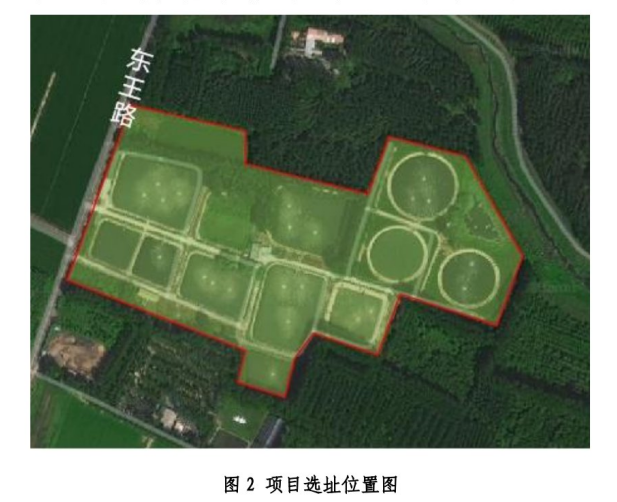
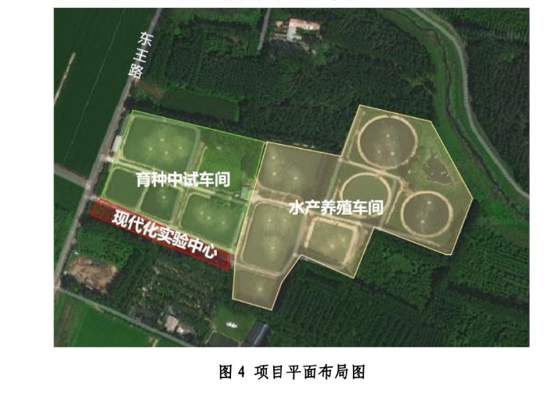

企业简介
北京天下渔仓科技有限公司是一家从养殖一线成长起来的科技型民营企业，专注于现代化智慧渔业。公司与中国水产科学院、南京农业大学、中国农业大学、华中农业大学、上海海洋大学、大连海洋大学、中国农业科学院饲料研究所、中国农业科学院淡水渔业研究中心等8所高校及科研院所建立了深度合作关系。
公司拥有专利97项，其中发明专利36项，形成了以渔业传感器芯片、AI大数据模型、智能装备为核心竞争力的技术体系。2025年5月，由北京市平谷区发展和改革委员会牵头、北京市工程咨询股份有限公司编制的《北京天下渔仓平谷智慧渔业项目谋划论证报告》正式完成，标志着该项目进入实质性推进阶段。
项目概况
天下渔仓平谷智慧渔业项目选址于马昌营镇东双营村南、东王路东侧，位于北京宝和庄园养殖基地内，占地约170亩。项目深度融合现代经营管理模式与先进技术设备，采用国际领先的流水槽模式工业化智能养殖技术，推动科技成果快速转化，打造"绿色、安全、生态"的渔业示范标杆。

建设内容及规模
- 水产养殖车间：约25,000平方米，采用第四代工业化养殖装备，实现陆基方池循环水养殖
- 育种中试车间：约15,000平方米，涵盖种苗孵化、育种实验、中试推广
- 现代化实验中心：约1,000平方米，含水质检测实验室、AI数据中心
- 农光互补光伏发电：2MW自发自用光伏设施，实现能源自给

投资估算
项目总投资匡算为16,156.8万元（约1.82亿元），其中：
- 工程费用：13,600万元（占84.1%）
- 工程建设其他费用：1,360万元（占8.4%）
- 预备费：1,196.8万元（占7.4%）
资金来源：申请政府资金30%（约4,847万元），企业自筹70%（约11,310万元）。
十大AI智慧系统
项目构建了完整的AI智慧渔业技术体系，涵盖养殖全流程的智能化管理：
- AI智能投喂系统：基于鱼群行为识别和水质参数，精准控制投喂量和频次
- AI水质监测系统：实时监测溶解氧、pH值、氨氮等关键水质指标
- AI鱼病诊断系统：通过图像识别技术，早期发现鱼病征兆
- AI生物安全防控系统：全方位监控养殖环境，保障生物安全
- AI智能增氧系统：根据溶氧数据自动调节增氧设备运行
- AI智能温控和余热回收系统：精准调控水温，回收余热降低能耗
- AI安防系统：24小时智能监控，保障养殖基地安全
- AI理化实验室：自动化水质理化指标检测分析
- AI数字孪生平台：构建虚拟养殖环境，实现数字化管理
- AI大数据决策中心：汇聚全链数据，辅助经营决策
平急两用体系
项目构建了独特的"平急两用"智慧渔业基地功能体系：
平时：通过智能化设备精准调控养殖环境参数，实现高效、低耗、零排放的现代化渔业生产，打造科技示范和科普教育基地。
急时：快速响应保障首都水产品供应，依托完善的冷链物流体系和充足的活体水产品储备，在应急状态下迅速转为保供基地，保障首都"菜篮子"安全。
建设时序
2025年1月 — 2025年6月
前期策划阶段：完成项目谋划论证报告、用地备案手续、方案设计
2025年7月 — 2026年3月
设计招标阶段：完成施工图设计、工程招标、设备采购
2026年4月 — 2027年3月
施工建设阶段：完成土建施工、设备安装调试、系统联调联试
政策依据
项目建设依据以下重要政策文件：
- 《北京市推进农业中关村建设行动计划（2022-2026）》
- 《北京市关于加快推进农业中关村建设的十条措施》
- 《平谷区"十四五"时期农业科技创新示范区建设发展规划》
- 农发〔2024〕1号、财农〔2021〕41号等国家部委文件